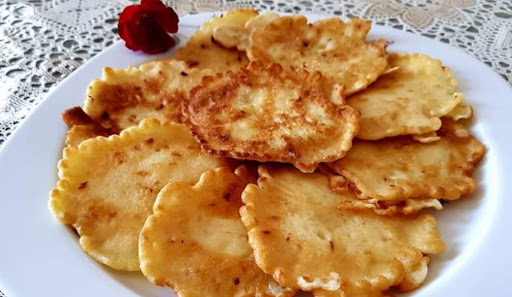
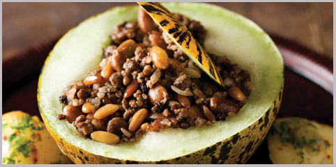
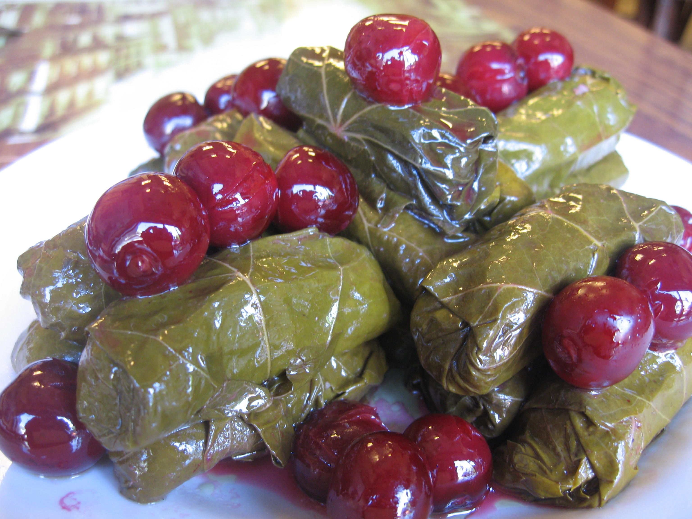

Kızdırılmış tereyağının üzerine piyazlık doğranmış kuru soğanı ekleyin ve 5 dakika kadar orta ateşte kavurun.
5 dakika sonrasında esmer şekeri de ekleyip soğanları karamelize olması için ara ara karıştırarak kısık ateşte pişirin.
Soğanlar karamelize olduktan sonra baharatları da ekleyip tekrar güzelce karıştırın.
Çemensiz pastırmaları da ekleyip 1 dakika kadar soğanlarla birlikte karıştırın ve koyacağınız yumurta sayısı kadar, kaşık yardımıyla çukurlar oluşturun.
Yumurtaları oluşturduğunuz çukurlara yerleştirin ve kısık ateşte pişirin. Sıcak olarak, taze ekmek ile servis edin.
Lalanga

Lalanga Tarifi İçin Malzemeler
2 adet yumurta
1,5 su bardağı süt
2 yemek kaşığı yoğurt
1 çay bardağı kaşar peyniri
2 su bardağı un
1 çay kaşığı tuz
Kızartak için:
1/3 su bardağı yağ
Lanlanga Tarifi Nasıl Yapılır?
Bir kabın içerisine yumurtaları kırın. Yumurtaları çırptıktan sonra üzerine yoğurt ve sütü ilave ederek karıştırın.
Ardından kaşar peyniri ve unu ilave ederek kek kıvamına benzer yoğunlukta bir harç elde edin.
Bir tavanın içerisine yağı aktarın ve kızdırın. Ardından hazırladığınız harçtan kaşık yardımıyla ya da elinizle şekillendirerek orta kalınlıkta bezeler alın ve yağda arkalı önlü kızartın.
Fazla yağını süzdürerek servis edebilirsiniz. Afiyetler olsun.
Kavun Dolması

Kavun Dolması Tarifi İçin Malzemeler
1 adet kavun
1 adet soğan
2 yemek kaşığı tereyağı
400 gram kıyma
2 kahve fincanı baldo pirinç
1 avuç çiğ badem
avuç antep fıstığı
1 avuç kuş üzümü
1 avuç ince doğranmış dereotu
1 avuç ince doğranmış maydanoz
1 çay kaşığı kişniş
1 çay kaşığı yenibahar
6 yemek kaşığı içi oyulan kavunun parçaları
1 yemek kaşığı tereyağı
1 tutam ince doğranmış dereotu
1 tutam ince doğranmış maydanoz
Kavun Dolması Tarifi Nasıl Yapılır
Öncelikle bir kasenin içerisine sert kabukları soyulmuş olan antep fıstıklarını alın ve üstlerine sıcak su ilave edip yaklaşık 10 dakika bu şekilde bekletin, böylece dışlarındaki ince kabuğu rahatça soyabilirsiniz.
Bir başka kaseye kuş üzümlerini koyun ve onların da üstüne sıcak su koyarak, şişmeleri için yaklaşık 10 dakika bekletin.
Pirinci yıkayıp bir küçük tencereye alın, üstüne çıkacak kadar kaynar su koyun ve bu şekilde 5 dakika kaynatıp, altını kapatın ve süzdükten sonra bir kenara alın.
Tereyağını bir tavada kızdırın ve içine ince ince doğradığınız kuru soğanı ilave edip, soğanlar pembeleşene dek kavurun.
Pembeleşen soğanların üstüne kabuğunu soyduğunuz antep fıstıklarını ve bademleri ekleyip birkaç dakika daha kavurun.
Kuş üzümlerini süzün ve karışıma ilave edin. Kıymayı da ekleyerek, güzelce kavurun.
Kıyma iyice kavrulduktan sonra, sıcak suda 5 dakika haşladığınız pirinçleri de ilave edip güzelce karıştırın.
İnce doğranmış maydanoz ve dereotunu da ekleyin, ardından baharatları da ilave edip güzelce harmanlayın ve ocağın altını kapatın. İç harcınız hazır.
Kavunu yıkayıp enine olacak şekilde ikiye bölün. İçindeki çekirdekleri bir kaşık yardımıyla çıkartıp atın ve daha sonra yine kaşık yardımıyla iç kısmını dikkatlice oyun.
Oyarken çıkan kavun parçalarını bir kenara ayırın. Güzelce oyduğunuz kavunun içini hazırladığınız iç harçla doldurun ve önceden ısıtılmış 180 derece fırında 20 dakika pişmeye bırakın.
Kavun dolmanız fırında pişerken siz de sosunu hazırlayın; bir tavaya sos için gerekli olan tereyağını alın ve içine ayırdığınız kavun parçalarını ekleyip güzelce kavurun.
Ardından ince doğranmış birer tutam maydanoz ve dereotunu da ekleyin. Suyu da ilave edip, kavunlar iyice eriyip sos kıvamına gelene dek pişirin.
Pişirme süresinin sonunda fırından çıkarttığınız kavun dolmasını, yanında hazırladığınız kavun sosu ile birlikte sıcak olarak servis edin. Afiyetler olsun!
Vişneli Yaprak Sarma

Vişneli Yaprak Sarma Tarifi İçin Malzemeler
500 gram asma yaprağı
5 adet orta boy kuru soğan
2 su bardağı pirinç
1/2 çay bardağı zeytinyağı
2 yemek kaşığı dolmalık fıstık
1 yemek kaşığı kuş üzümü
300 gram vişne (çekirdekleri çıkartılmış)
3/4 su bardağı sıcak su
1/2 su bardağı vişne suyu
1 yemek kaşığı nar ekşisi
1 tatlı kaşığı kuru nane
1 tatlı kaşığı tuz
1 çay kaşığı toz şeker
1 çay kaşığı yenibahar
1/2 çay kaşığı tarçın
1/2 çay kaşığı karabiber
1/4 demet dereotu
1 adet orta boy limon
Vişneli Yaprak Sarma Tarifi Nasıl Yapılır?
Bol suda yıkayıp fazla suyunu süzdüğünüz asma yapraklarını kısık ateşte haşlayıp haşlama suyunu süzün. Sap kısımlarını kopardığınız asma yapraklarını soğuması için ayrı bir kenarda bekletin.
Kuru soğanları küçük küpler halinde yemeklik doğrayın. Zeytinyağının yarısını geniş tabanlı bir tencerede kızdırın. Doğranmış kuru soğanları yumuşayıp hafif bir renk alana kadar orta ateşte kavurun.
Dolmalık fıstık ve soğuk suda bekletip suyunu süzdüğünüz kuş üzümlerini kısa bir süre kuru soğanlarla birlikte kavurun.
Bol suda yıkayıp suyunu süzdüğünüz pirinçleri katıp şeffaf bir görünüm alana kadar kısık ateşte kavurun. Sıcak su ve vişne suyu ekleyip hazırladığınız iç harcı kısık ateşte, 8-10 dakika kadar pişirin. Demlenmesi için kapağı kapalı tencerede demlendirin.
Demlenen sarma harcına nar ekşisi, kalan zeytinyağı, tuz, toz şeker, karabiber, yenibahar, tarçın, kuru nane ve ayıklandıktan sonra incecik kıyılmış dereotunu ekleyin. Tüm malzemeyi harmanlayın.
Önceden haşlayıp fazla suyunu süzdüğünüz yaprakları tek tek mutfak tezgahına açın. İç kısmına dolu dolu bir tatlı kaşığı kadar iç harç yayıp bir adet çekirdeksiz vişne yerleştirin.
Kenar kısımlarını içe doğru katlayıp her bir yaprağı rulo şeklinde sarın. Sarmaların eşit büyüklük ve kalınlıkta olmasına özen gösterin. Hazırladığınız sarmaları tek sıra halinde tencereye dizip tüm sarmalar bitene kadar aynı işlemi kat kat uygulayın.
Kalan çekirdeksiz vişne taneleri, incecik dilimlenmiş limon ve kalan birkaç adet asma yaprağını sarmaların üzerine örtün. Ağırlık yapması için üzerlerine bir servis tabağı kapatıp sarmaların kenar kısımlarından görünecek kadar sıcak su ekleyin.
Kapağı kapalı tencerede, kısık ateşte 30-35 dakika kadar pişirin. Suyunu çeken ve pişen sarmaları arzuya göre ılık ya da soğuk olarak üzerlerine sızma zeytinyağı gezdirip servis edin.